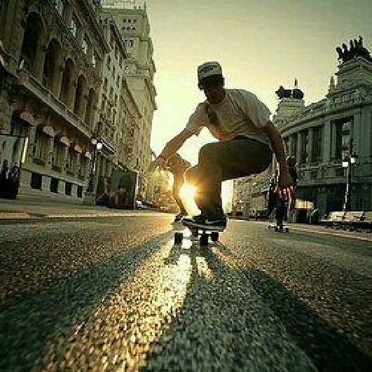

October 20, 2017
【入门通读】初学滑板的注意事项
- 1、先把滑行练好： 把重心放在不动的那只脚上，在撑滑地面时身体稍微向前倾，也没啥窍门，多滑就会稳了。
- 2、转弯：你平常习惯用哪只脚撑滑地面，就把那只脚放在板尾翘起处，并且施加压力，而另一只脚微微抬起，而此时板子会斜翘起。再用手和身体(特别是腰)做适当的旋转(也是常练就能抓到窍门)。以身体转的力道来控制转弯时角度的大小。
- 3、停止：最平常的方法就是直接下来并且拿起板子，或用平常撑滑地面的那只脚的脚根磨擦地面使速度慢下；也可用后面那只脚将翘起处用力压下，使板子成45度而会停得很快但我不太鼓励各位用煞法，常用的话板子底部的末端会磨损得很厉害。再比较难的，跳起并接住板身，或用你不动的那只脚踏板子前面的翘起处，另一只脚抬起一点点，并用转弯的方法使板子很快的横向往前滑行(身体要向后仰)，一下就停了。
- 4、豚跳：把平横以及基础都练好以后，已经可以试试豚跳，首先，后面那只脚放于翘起处，要稍微悬空(就是后脚一半在板上，一半悬空)，另一只脚放在左右四个螺丝的正中间(或向前靠一点，总之不要超过前面的螺丝)，脚尖最好不要超出板子边缘(稍向后都没关系);先在原地练习，站到板子上试试，并且用前脚成刀状，就是用鞋子外侧边缘向斜前方画上去，就是用鞋边刮板上的砂纸而带起板子。等到可以跳起且很稳时，试试看跳上一片又大又薄的木板，如果一开始这样练，一下子就可得心应手。
- 5、180跳跃: 在已很熟跳跃后，滑慢慢的，身体稍微向后倾，后脚稍微压下翘起处让板子刷出去，前脚顺势拉回来，一开始练板子一定会常常飞出去，记住脚在跳之前要比一般跳站的分开一点，最好是后脚站在翘起处。而前脚站在四个螺丝上(前脚脚尖要超出板子边缘一点)。熟练后，可以试试将前脚站的跟"跳跃"一样的位子，那样会跳很高的转180。